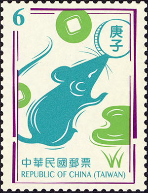

請輸入姓名：
Dear：{{name}}
祝你在鼠年，有情人終成眷鼠、鼠不盡的收穫、鼠不盡的鈔票、鼠不盡的美滿生活！
好的!!吉祥話時間結束
時間飛逝，轉眼間又是新的一年
去年的新年新希望達成了嗎？
恭喜!!祝你今年也能順利達成。話說今年願望是甚麼可以偷偷跟我講嗎？
沒關係，人因夢想而偉大，新的一年會更好的。
工作還開心嗎？
能找到滿意的工作，真為你感到高興，記得要照顧自己的身體。 (OS：我覺得一定沒有人會選這個選項)
你並不孤單，我也是，為了五斗米折腰。說錯，是為了一斗米跪在地上。
但我相信你一定能撐過去的，不經一番寒徹骨 焉得梅花撲鼻香，加油。記得要照顧自己的身體。
最後我想說的是，努力工作養活自己固然重要。
但人生並不是只有工作，希望你能找到自己未來的目標、找到有興趣的事物、找到生命中對的那個人。
很多事情不是自己能掌控的，人生過得開心就好。 (OS：我人生一直都不再掌控內，隨遇而安，哈哈)
願所有的好運：鼠於你。
PS：封面的動圖是我自己做的，做的不錯吧!!
有眼光
走開